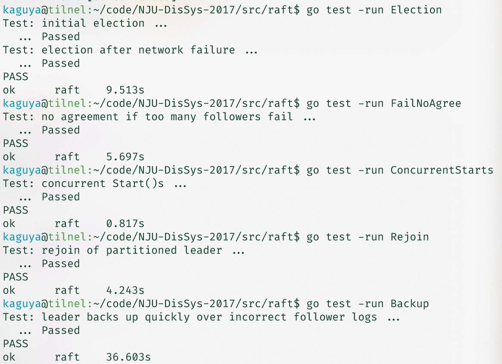
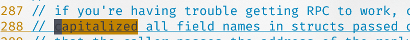

Raft 实验报告
Comment分布式系统课程实验报告
502023330051 孙博文
实现目标
基于所给go语言框架实现了一个简单的 Raft 协议，包括选举、复制。最终通过了如下的测试(包含 Part1 和 Part2 的全部测试)：
分析与设计
定义角色
1 | const ( |
并设置时间相关变量
- 选举超时间隔 100-500ms
- 心跳间隔100ms
1 | const ( |
定义日志项
1 | type Entry struct { |
Raft结构体定义
为了实现选举，心跳机制和日志追加等内容，还引入了一些其他字段
1 | log []Entry // 日志 |
RPC相关
RequestVote 和 AppendEntries, 和论文基本一致
1 | type RequestVoteArgs struct { |
协议实现
节点启动后, 将创建3个goroutine:
1 | go rf.LeaderElection() |
分别对应选举, 心跳, 与日志应用
节点选举
首先节点需要在三个角色中切换. 因此设计了:
1 | func (rf *Raft) goLeader() |
其中转换到 Follower 需要对应的任期.
节点启动后,都初始化为 Follower, 并设置选举超时. 进入 LeaderElection 协程后, 等待一个随机的选举超时, 如果自身是 Follower 或 Candidate, 则 goCandidate(), 任期 + 1, 发起选举, 给自己投一票, 然后发送 RequestVoteRPC. 发送时即接收回复, 收到多数派承认则成为 Leader.
心跳
对于 Leader, 等待心跳间隔后发送一个 AppendEntry, 附加上 nextIndex 指示的一部分 Log, 发给所有的 Follower 即可.
日志复制
发送者发送心跳后, 会受到回复.
如果 reply.Term > currentTerm, 此时发送者已经不是 Leader, 无需响应;
如果 reply 成功, 则更新对应节点的 matchIndex 等信息, 并尝试更新 commitIndex;
如果 reply 失败, 则可能后退任期进行重试.
而接收者的行为可以概括为:
- 拒绝 Term 小于自身任期的请求
- lastLogIndex 小于心跳包的 PrevLogIndex, 说明节点日志陈旧, 通过回复 Leader 一个 NextIndex 来指示下次的发送
- 除此之外, 覆盖原有条目
- 接收 LeaderCommit, 更新 commitIndex
日志应用
通过 LogApply() 中的循环, 不断更新最新被应用的条目, 直到不超过 commitIndex 的条目.
实验总结
Raft 相比于 Paxos 已经较为容易理解，但是在实现过程中，依然难以完美。主要问题出现在并发程序上。一共三个节点，加上每个节点有3个/实际是4个协程，各种打印信息交织在一起，很难分析出问题的原因。
▲没有大写RPC相关结构体的字段浪费了大量时间，直到看到了这段提示